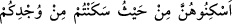

talakla, ister bir ric’i ya da bâin talakla boşanmış olsun farketmez. Böyle bir kadın iddet
beklediği sürece nafaka ve mesken hakkına sâhibdir.
Ric’î talakla boşanmış olan kadına gelince böyle bir kadın önceden olduğu gibi yine
nikâhlıdır. Böyle bir boşanmada nikâh ancak iddetin dolmasıyla ortadan kalkar. Bu
nikâhın iddetin dolmasıyla ortadan kalkabilir durumda olması, kadının nafaka hakkını
düşürmez. Bu tıpkı karısına “îlâ” yapan ve talakını ayın geçmesine bağlayan kimse
örneğinde olduğu gibidir. Ric’i talakla boşanmış olan kadının âlimlerin icmâına göre
nafaka ve mesken hakkı vardır.
Bâin talakla boşanmış olan kadına gelince bizim mezhebimize göre iddet süresi içinde
olduğu sürece böyle bir kadının nafaka ve mesken hakkı vardır. Delil ise Yüce Allah’ın
“onları gücünüz ölçüsünde oturduğunuz yerin bir bölümünde oturtun” (et-Talak,
65/6) âyet-i kerîmesidir. Çünkü bu âyetin mânâsı “İddet bekleyen kadınları oturduğunuz
yerin belli bir bölümünde oturtun ve imkânlarınız ölçüsünde iddet süresince onlara
infakta bulunun” demektir. Çünkü İbn Mes’ûd (r.a.) bu âyet-i kerîmeyi “__WORD__ şeklinde okumuştur. Yâni İbni Mes’ûd’un kıraatında
“onlara infak edin” şeklinde bir fazlalık vardır. Bu da nafakaya hak sâhibi olduklarını
göstermektedir. İmam Şâfiî’ye göre ise bu âyetin ifâdesi gereği böyle bir kadının
mesken hakkı vardır. Ancak nafaka hakkı hâmile olmadıkça yoktur. İmam Şâfiî delil
olarak “eğer hâmile iseler doğum yapıncaya kadar nafakalarını verin” (et-Talak,
65/6) âyetini ileri sürmektedir.
Madem ki sizin mezhebinize göre her boşanmış kadının nafaka hakkı vardır. O zaman
“eğer hâmile iseler...” şeklindeki şartın ne faydası vardır? diye bir soru sorulacak
olursa buna cevaben deriz ki: Bu şartın faydası şudur: Hâmilelik süresi belki uzun
sürebilir ve bazıları hâmilelik iddetinin miktarının dolmasıyla nafakanın düşeceğini
zannedebilirler. İşte âyet-i kerîme Keşşaf’da da belirtildiği üzere bu yanlış anlamayı
ortadan kaldırmış olmaktadır.
“Sizin için çocuğu emzirirlerse” Arapçada “rada” memeden süt içme anlamınadır.
Şeriatte ise bu terim, herhangi bir çocuğun hakikaten ya da hükmen saf veya çoğunluğu
insan sütü karışımı olmak kaydıyla karışık insan sütünü özel bir dönemde içmiş olması
demektir. Buna göre âyetin mânâsı; Bu boşanmış olan kadınlar şâyet başka eşlerinizden
olan ya da kendilerinden olan çocuklarınızı karı koca ilişkisinin sona ermesinden sonra
emzirecek olurlarsa onlara ücretlerini verin, demek olur.
Âyet-i kerîmede “evlâdüküm” denilmeyip de “leküm” denilmesi yâni “çocuğunuzu
emzirirlerse” yerine “sizin için emzirirlerse” denmesi Yüce Allah’ın “emzirmeyi
tamamlatmak isteyen (baba için) anneler çocuklarını iki tam yıl emzirirler.” (el-
Bakara, 2/233) şeklinde ifâde buyurmuş olmasından dolayıdır. Şu halde çocuğun
emzirilmesi anneye değil, babaya vâcibdir. Anne kendi gönlü ve rızâsı ile çocuğu
emzirmek istemediğinde babanın onun için sütanne tutması gereklidir. Kadının ise
çocuğu emzirmesi menduptur, ancak buna icbar olunamaz. Ebû Hanife’ye göre anneyi